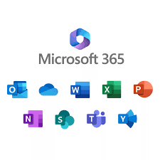
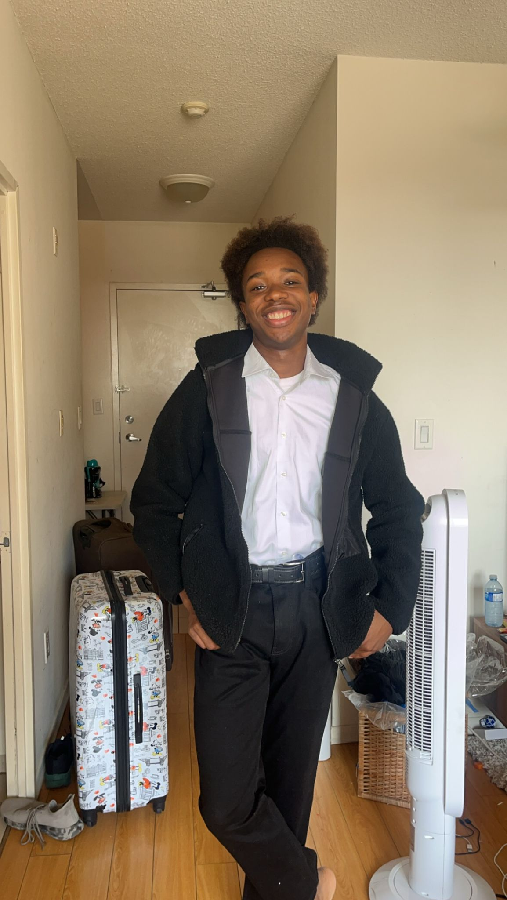
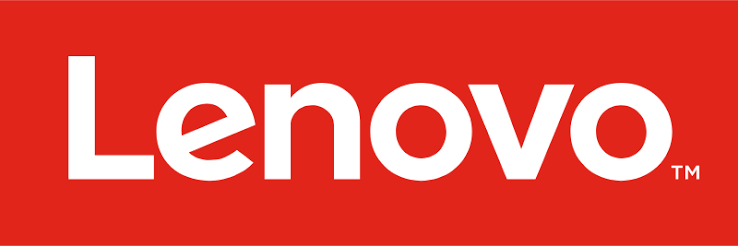

Office 365 Deployment Automation
A modular PowerShell framework that silently downloads, installs, and validates standardized Microsoft 365 applications across enterprise Windows endpoints.
View
Computer Science student at York University and IT Analyst at Metergy Solutions. I specialize in PowerShell automation, Microsoft 365 deployment, and enterprise systems integration—turning repetitive manual work into reliable, scalable scripts.
I'm an Honours B.Sc. Computer Science student at York University, expected to graduate in 2027, and I currently work as an IT Analyst Co-op at Metergy Solutions. My focus is enterprise automation: I build defensive PowerShell scripts, automate Microsoft 365 deployments, integrate vendor APIs, and design ITSM workflows that reduce manual overhead and improve reliability across Windows environments.
Previously, I mentored eight lab assistants at K2i Academy within the Lassonde School of Engineering, delivering STEM instruction aligned with the United Nations Sustainable Development Goals. I enjoy solving complex problems and documenting repeatable solutions that help teams work more efficiently.

A modular PowerShell framework that silently downloads, installs, and validates standardized Microsoft 365 applications across enterprise Windows endpoints.
View
A PowerShell tool that queries the Lenovo warranty API by serial number, parses JSON responses, and exports structured CSV records for asset-compliance tracking.
ViewA service-desk triage board that organizes incident queues, prioritizes ticket tiers, and documents handoffs to improve backlog visibility and response times.
ViewA voice-driven augmented-reality music visualizer built with Lens Studio, the Gemini API, and Snap 3D Object Gen, then deployed to physical Snap Spectacles hardware.
ViewPowerShell, Bash and Unix shell, API integration, JSON parsing, and scheduled automation.
Microsoft 365 Admin Center, Active Directory, Windows deployment, and endpoint configuration.
Incident management, workflow triage, process automation, and technical documentation.
Java, Python, SQL, C, C++, JavaScript, TypeScript, HTML, CSS, and R.
Git, GitHub, Jira, Confluence, TestRail, Charles Proxy, API testing, and regression testing.
Linux, Unix, and Windows administration, environment setup, and repeatable deployment pipelines.